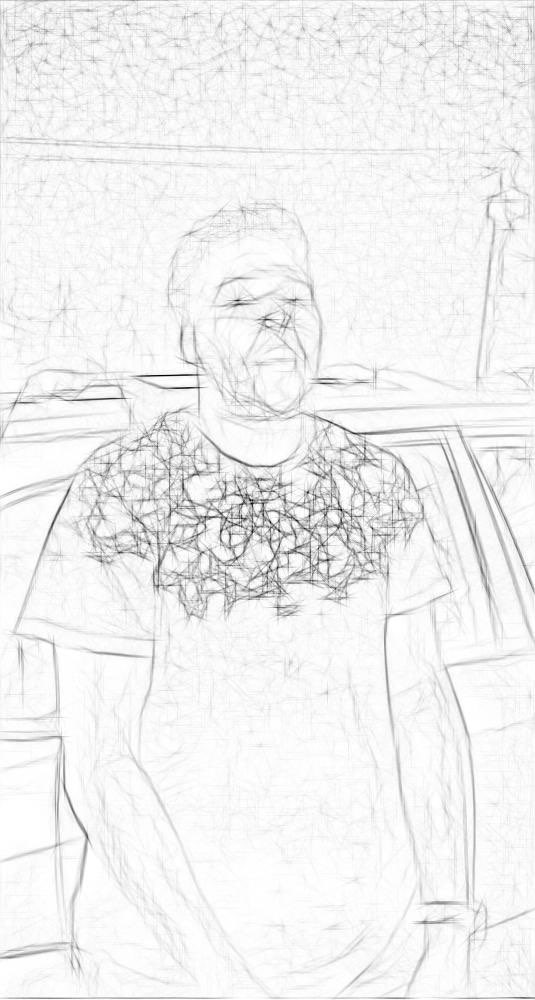

CSC-492-Project
Problem: It can be difficult to plan and accurately track your fitness goals
Core Tasks
- Task 1 - The app allows the user to enter factors like weight, age and height and generates a rough estimate of what their caloric intake should be to lose weight. It will give them a rough amount of weight to lose weekly and what their caloric intakes should be to support that lose within the timeframe they want to lose it. These calculations use the Harris-Benedict equation to calculate the user's basel metobolic rate.
- Task 2 - The system allows the user to enter in workout routines and saves those workouts to their profile
Informed consent form
Questions
- How satisfied or dissatisfied are you with finding your caloric restrictions?
- Please tell me when you’ve found where to plan workouts?
- How did you know where to view your workouts?
- Please tell me when you’ve found where to enter your metrics?
- How did you know where to enter your metrics?
- What information did you expect to see after entering your metrics?
- What’s most confusing or annoying about the metric entering process?
Closing Questions
- What part of the application was the most annoying?
- What part of the application was the most pleasant to use?
Participants
Particpate 1
- 19 year old college student who is also a family member who recently began working out but was having trouble keeping track with how much his caloric intake should be with his workouts.
- found it tedious to reenter all metrics when updating their metrics when they just wanted to update 1 field.
- Liked how after entering his metrics it told him the MAX amount of calories he could have each day to meet his goals.
Particpate 2
- 30 year old family member who was recruited because they were trying to lose weight. they are a full time worker and struggle planning out their diet and workouts
- They found that the interface was vauge and fairly difficult to navigate. They also expected more visual representations of information to be present (Charts and the like for caloric data)
Particpate 3

- Friend who was recruited because they were looking to gain weight.
- Unique because they were looking to gain weight instead of losing weight. They are also knowledgable in regards to fitness and actively workout
- Pointed out key missing visual and QoL aspects of the app that would improve the user experience overall.
- Enjoyed how informative and detailed the information presented by the app was.
Usability Lessons
Functionality Issues
- Updating metrics is tedious and you should be allowed to update one thing at a time instead of re entering all of your metrics. (P1, P2). (High)
- Plan workouts page should display previously entered workouts (P2, P3). (High)
- Plan workouts should recommend workouts for beginners (P2, P3). (Medium)
- A suggestion box for meals people could eat when trying to lose weight (P3). (High)
- The app should support gaining weight instead of strictly losing weight (P3). (High)
- Plan workouts should recommend workouts for beginners (P2, P3). (Medium)
- The pace and duration fields in the cardio workout section are confusing (P1, P2). (Medium)
- Logout button should be away from the other buttons (P2… Accidentally logged out twice). (Low)
- When planning workouts the app should explain the difference between a workout, exercises, sets, and reps (P2). (High)
- P2 suggested a hover over text box as a solution.
- No support for if the app was to break (P3). (Medium)
Visual Issues
- When viewing their metrics some form of graph to go along with it was expected (P2). (P3) expected some sort of calorie plan by day(says this based the calendar buttons presence) (High)
- The aesthetic of the app is bland with too much white space (P3). (Medium)
- Week/Months entry is not obvious, text entry area for the number value is too large which implies you type the week or month (P2) (High)
- The home button should be the top button of the navigation sidebar (P2). (Medium)
Reflections
- In general the app needed more clarity. Desgining systems going forward I'll have to be sure to be more clear
- The app should include more quality of life features, such as being able to edit a single part of ones metrics vs having to re-enter all of them this led the users to being frustrated and may have distracted them.
- Small quality of life aspects of the app can have a big impact on the overall user experience. In the future we would like to add key quality of life aspects to improve user experience before having them test the program. Simple easy to fix things such as home button placement and logout button placement.
- We would interview more people for a better understanding of what our user base clearly expected.
- I had an issue where I tended to unconsciously fill the silence after asking questions. I probably would try harder to focus on allowing the participant a moment to reflect. (Evan)